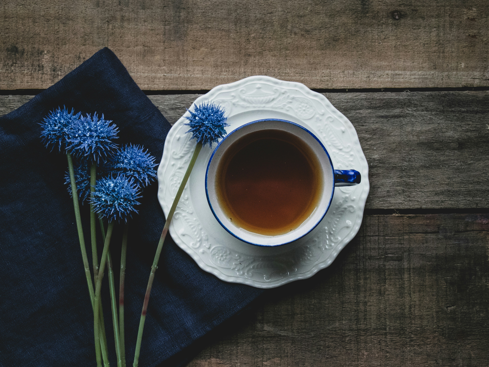

Masala Chai

Description
Masala chai is a popular beverage throughout South Asia, originating in the early modern Indian subcontinent. Chai is made by brewing black tea in milk and water and then sweetening with sugar.
Ingredients
- 1 Cup of water
- 1 teaspoon sugar
- 1 cardamon pod
- 1 cup of warm milk
- 2 teaspoons of black tea leaves
Steps
- First start with boiling the 1 cup of water.
- after 1-2 minutes, add 2 cups of teaspoon of black tea leaves into the water and let it boil for some time
- Now add one cup of warm milk
- After adding warm milk add 1 teaspoon of sugar and let it boil on medium flame
- After few minutes, starin the chai into a cup and enjoy